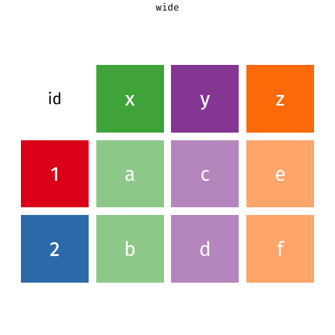
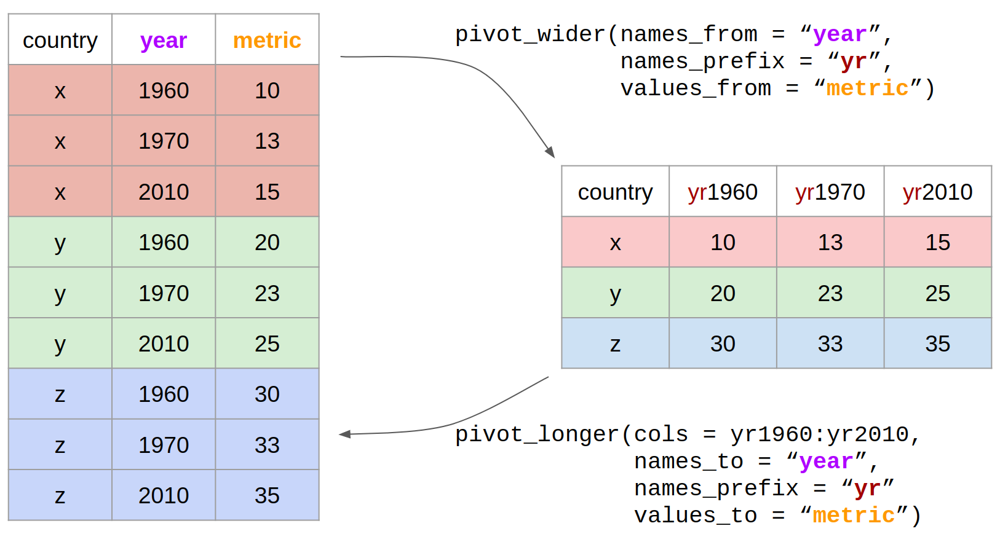

Appendix B — Tidy data
We are going to learn how to organise data using the tidy format, because this is the format the tidyverse packages Wickham (2023) are built around. The tidyverse is an opinionated but highly effective approach to reproducible analysis, with a wide range of data manipulation tools. Tidy data is an easy format for computers to read. It is also the structure that most modelling and plotting functions in R expect.
Here ‘tidy’ refers to a specific structure that lets us manipulate and visualise data with ease. In a tidy dataset each variable is in one column and each row contains one observation. Each cell of the table/spreadsheet contains the values. You might notice that tidy data is quite long: it has a lot of rows. Tidy data is usually longer than wide data, so people often talk about it as long-format data, but the two are not quite the same thing. A dataset can be long and still untidy, for example if one column mixes two different variables.
B.1 Why tidy data?
The data cleaning and analysis tools in R work best with data that is “tidy”
“Tidy” data has a clear and consistent structure; untidy data can be “messy” in lots of different ways
B.2 Using pivot functions
What do we do if the data we are working with in R isn’t “tidy”?
The tidyverse includes functions that help us reshape data:
tidyr::pivot_wider()- from long to wide formattidyr::pivot_longer()- from wide to long format

| country | yr1960 | yr1970 | yr2010 |
|---|---|---|---|
| x | 10 | 13 | 15 |
| y | 20 | 23 | 25 |
| z | 30 | 33 | 35 |
B.2.1 Pivot longer

To save these changes to your data format, you must assign the result to an object. You have two options:
Use the same name as the original R object: this will overwrite the original with the new format
Use a new name for the reformatted data: both R objects will then exist in your Environment
Neither is more correct than the other but be aware of what you are doing.
B.2.2 Create a new R object
B.2.3 Overwrite the original object
After running this, country_data is in long format, so the wide-format code above will no longer work on it (the yr1960:yr2010 columns are gone). This is why we created long_country_data first.
B.2.4 Pivot wider
Let’s use the long country data we have just generated as an example of how we could use the pivot_wider() function and reverse the process: